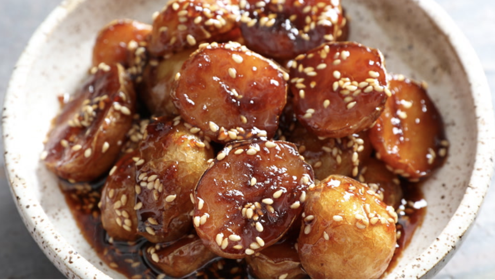

Sweet and Salty Gamja Bokkeum

If your side dish recipe rotation is feeling a little tired, then this take on gamja bokkeum,
a Korean stir-fried potato banchan, is just what you need to get out of that rut.
It's a good thing that this recipe only takes 20 minutes to
make because it will be in your side dish lineup from now on.
Original recipe
- 3 tablespoons (45ml) soy sauce
- 3 tablespoons (45ml) water
- 2 tablespoons (30g) sugar
- 1 medium clove garlic (5g), finely grated
- 2 tablespoons (30ml) vegetable oil
- 10 ounces (285g) small Yukon Gold potatoes, rinsed and halved
- 1 tablespoon (15ml) toasted sesame oil
- 1 tablespoon (6g) toasted sesame seeds
- In a small bowl, whisk together soy sauce, water, sugar, and garlic until sugar is dissolved, about 30 seconds. Set aside.
- Pour oil into a 3-quart saucier or saucepan. Add potatoes, arranging them cut-side down in a single layer. Set saucier over medium-high heat and cook, uncovered, until potatoes are light golden-brown on cut-side, 5 to 6 minutes.
- Lower heat to medium-low, add soy sauce mixture and stir to combine with potatoes. Cover saucier with a lid, and cook until potatoes are completely tender and offer no resistance when pierced with a cake tester or paring knife, about 10 minutes.
- Remove lid and increase heat to high. Cook, uncovered, stirring constantly with a heat-resistant rubber spatula, until liquid has reduced and thickened to a sticky caramel consistency that fully glazes the potatoes, 1 to 2 minutes.
- Remove from heat, and transfer potatoes to serving bowl. Drizzle with sesame oil, sprinkle with sesame seeds, and serve.